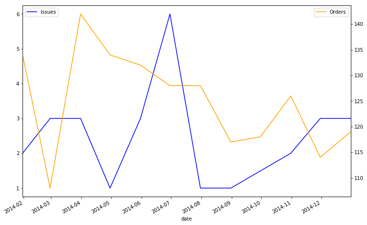
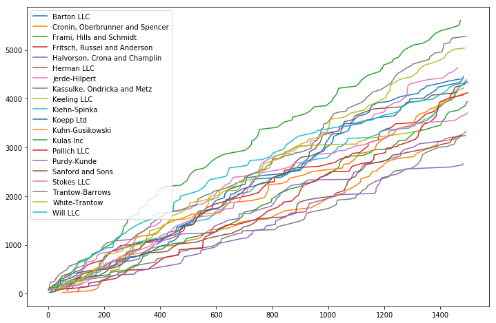

GroupBy (as best I understand it)
Table of Contents
Data - Our Dummy Data
Overview - The Basics - Grain - GroupBy Object
Using It - Apply - Transform - Filter
Misc - Grouper Object - Matplotlib - Gotchas - Resources
Our Dummy Data
For the purposes of demonstration, we’re going to borrow the dataset used in this post. It’s basically some generic sales record data with account numbers, client names, prices, and timestamps.
import pandas as pd
dataUrl = r"https://github.com/chris1610/pbpython/blob/master/data/sample-salesv3.xlsx?raw=True"
df = pd.read_excel(dataUrl, parse_dates=['date'])
df.head()| account number | name | sku | quantity | unit price | ext price | date | |
|---|---|---|---|---|---|---|---|
| 0 | 740150 | Barton LLC | B1-20000 | 39 | 86.69 | 3380.91 | 2014-01-01 07:21:51 |
| 1 | 714466 | Trantow-Barrows | S2-77896 | -1 | 63.16 | -63.16 | 2014-01-01 10:00:47 |
| 2 | 218895 | Kulas Inc | B1-69924 | 23 | 90.70 | 2086.10 | 2014-01-01 13:24:58 |
| 3 | 307599 | Kassulke, Ondricka and Metz | S1-65481 | 41 | 21.05 | 863.05 | 2014-01-01 15:05:22 |
| 4 | 412290 | Jerde-Hilpert | S2-34077 | 6 | 83.21 | 499.26 | 2014-01-01 23:26:55 |
How many different records do we have?
len(df)1500
In terms of categorical data, it looks like most of our grain will be determined by account number, name, and whatever sku is.
df.nunique()account number 20
name 20
sku 30
quantity 50
unit price 1392
ext price 1491
date 1500
dtype: int64
And our date ranges span
print(df['date'].min(), df['date'].max())2014-01-01 07:21:51 2014-12-31 12:48:35
The Basics
Split, Apply, Combine
At the heart of it, any time you use Group By, it’s because you’re trying to do any of the following:
- Splitting the data based on some criteria
- Applying a function to each group independently
- Combining the results into a data structure
In SQL, this is achieved in one shot with the following syntax
SELECT col1, col2, AVG(col3)
FROM table
GROUP BY Col1, Col2However, this quickly becomes cumbersome when exploring the data, as each new field you add requires rerunning the query.
By splitting this process up between the split and apply steps, we can stage the groups in memory and flexibly leverage the GroupBy object’s powerful methods, which generally do one of two things:
Aggregation: computing a summary statistic(s) about each group, e.g. per-group:
- sums
- means
- counts
This collapses the data to the grain that the data is grouped at.
Transformation: perform some group-specific computations. e.g.:
- Standardizing data within a group
- Filling missing data within groups using a value derived from the group
This returns a like-indexed dataset. So you will wind up with as many records of data as your initial population.
Grain
Under the Hood
Creating a GroupBy object is pretty straight-forward. You give pandas some data and you tell it what to group by.
This creates a DataFrameGroupBy object which is a sub-class of the NDFrameGroupBy class, which is in-turn a sub-class of the GroupBy class.
gb = df.groupby(by='name')
gb<pandas.core.groupby.DataFrameGroupBy object at 0x000000000AA43048>
Behind the scenes, all that’s happening is that it’s taking the index of the DataFrame
print(df.index)RangeIndex(start=0, stop=1500, step=1)
And making a simple dict by getting all of the unique values in your group definition as keys
df['name'].unique()array(['Barton LLC', 'Trantow-Barrows', 'Kulas Inc',
'Kassulke, Ondricka and Metz', 'Jerde-Hilpert', 'Koepp Ltd',
'Fritsch, Russel and Anderson', 'Kiehn-Spinka', 'Keeling LLC',
'Frami, Hills and Schmidt', 'Stokes LLC', 'Kuhn-Gusikowski',
'Herman LLC', 'White-Trantow', 'Sanford and Sons', 'Pollich LLC',
'Will LLC', 'Cronin, Oberbrunner and Spencer',
'Halvorson, Crona and Champlin', 'Purdy-Kunde'], dtype=object)
The corresponding values are just the indexes in the DataFrame that match these keys.
This means that creating new GroupBy objects is both quick and cheap (your underlying data is only saved once!). It also makes it very easy to inspect the data by group.
gb.get_group('Kulas Inc').head()| account number | name | sku | quantity | unit price | ext price | date | |
|---|---|---|---|---|---|---|---|
| 2 | 218895 | Kulas Inc | B1-69924 | 23 | 90.70 | 2086.10 | 2014-01-01 13:24:58 |
| 6 | 218895 | Kulas Inc | B1-65551 | 2 | 31.10 | 62.20 | 2014-01-02 10:57:23 |
| 33 | 218895 | Kulas Inc | S1-06532 | 3 | 22.36 | 67.08 | 2014-01-09 23:58:27 |
| 36 | 218895 | Kulas Inc | S2-34077 | 16 | 73.04 | 1168.64 | 2014-01-10 12:07:30 |
| 43 | 218895 | Kulas Inc | B1-50809 | 43 | 47.21 | 2030.03 | 2014-01-12 01:54:37 |
After you groupby, every row of the original dataset is going to be accounted for.
sum([len(gb.get_group(x)) for x in gb.groups.keys()])1500
Grouping
And so with this intuition in mind, you should think of the grouping criteria at the index-level.
For example:
Values in the Data
This comes in two flavors:
1) The raw data
print(len(df.groupby(by=df['name'])))20
2) Or for convenience, the column name itself
print(len(df.groupby(by='name')))20
To get even more granular than one field, pass the by argument in as a list of values
print(len(df.groupby(by=['name', 'sku'])))
print(len(df.groupby(by=[df['name'], df['sku']])))544
544
Numpy Arrays the same length as the axis
Similarly, you can write your own logic as long as the output has the same index as the original data.
Consider a scenario where you define a specific group of clients and want to compare their performance against the rest of the population.
ourGroup = ['Kassulke, Ondricka and Metz', 'Jerde-Hilpert', 'Koepp Ltd']
tf = df['name'].isin(ourGroup)
tf.value_counts()False 1265
True 235
Name: name, dtype: int64
This returns a Numpy array with True/False values for each row that, of course, have the same index
all(tf.index == df.index)True
Using this is as easy as
gb = df.groupby(tf)
gb.groups.keys()dict_keys([False, True])
As you can see, this partitions our data into two groups
print(len(gb.get_group(False)), len(gb.get_group(True)))1265 235
That match our value_counts above perfectly.
Functions/Maps applied to the axes themselves
Assume that we have a real simple dummy dataset
import numpy as np
abc = pd.DataFrame({'A' : ['foo', 'bar', 'foo', 'bar',
'foo', 'bar', 'foo', 'foo'],
'B' : ['one', 'one', 'two', 'three',
'two', 'two', 'one', 'three'],
'C' : np.random.randn(8),
'D' : np.random.randn(8)})
abc| A | B | C | D | |
|---|---|---|---|---|
| 0 | foo | one | 1.265959 | 0.555853 |
| 1 | bar | one | -0.544206 | 0.358620 |
| 2 | foo | two | 1.000534 | -0.835887 |
| 3 | bar | three | 1.872789 | 0.444664 |
| 4 | foo | two | 1.684510 | 0.558262 |
| 5 | bar | two | 0.970853 | 0.880734 |
| 6 | foo | one | 1.366091 | 0.760195 |
| 7 | foo | three | 1.638540 | 0.592039 |
And we want to group by whether the column is a consonant or not
# function implementation
def get_letter_type(letter):
if letter.lower() in 'aeiou':
return 'vowel'
else:
return 'consonant'
# dict implementation
letter_mapping = {'A': 'vowel', 'B':'consonant',
'C': 'consonant', 'D': 'consonant'}# axis=1 uses the column headers
grouped1 = abc.groupby(get_letter_type, axis=1)
grouped2 = abc.groupby(letter_mapping, axis=1)
print(grouped1.groups.values())
print(grouped2.groups.values())dict_values([Index(['B', 'C', 'D'], dtype='object'), Index(['A'], dtype='object')])
dict_values([Index(['B', 'C', 'D'], dtype='object'), Index(['A'], dtype='object')])
GroupBy Properties
Before we get into the Transform discussed above, here’s a quick look at some of the features available at the moment of instantiation.
gb = df.groupby('name')
gb<pandas.core.groupby.DataFrameGroupBy object at 0x000000000AAEC9E8>
Count of records in each group
gb.size()name
Barton LLC 82
Cronin, Oberbrunner and Spencer 67
Frami, Hills and Schmidt 72
Fritsch, Russel and Anderson 81
Halvorson, Crona and Champlin 58
Herman LLC 62
Jerde-Hilpert 89
Kassulke, Ondricka and Metz 64
Keeling LLC 74
Kiehn-Spinka 79
Koepp Ltd 82
Kuhn-Gusikowski 73
Kulas Inc 94
Pollich LLC 73
Purdy-Kunde 53
Sanford and Sons 71
Stokes LLC 72
Trantow-Barrows 94
White-Trantow 86
Will LLC 74
dtype: int64
As mentioned earlier, on the backend, all a GroupBy object is is a dict of keys: group, value: index.
Therefore, inspecting what groups exist is simple.
print(gb.groups.keys())dict_keys(['Barton LLC', 'Cronin, Oberbrunner and Spencer', 'Frami, Hills and Schmidt', 'Fritsch, Russel and Anderson', 'Halvorson, Crona and Champlin', 'Herman LLC', 'Jerde-Hilpert', 'Kassulke, Ondricka and Metz', 'Keeling LLC', 'Kiehn-Spinka', 'Koepp Ltd', 'Kuhn-Gusikowski', 'Kulas Inc', 'Pollich LLC', 'Purdy-Kunde', 'Sanford and Sons', 'Stokes LLC', 'Trantow-Barrows', 'White-Trantow', 'Will LLC'])
as is the distinct number of groups that we have
print(len(gb.groups))20
You can use the keys to either get the indexes that roll up
gb.groups['Barton LLC']Int64Index([ 0, 85, 91, 96, 99, 105, 117, 125, 158, 182, 183,
195, 202, 226, 237, 268, 306, 310, 397, 420, 423, 427,
430, 456, 459, 482, 505, 516, 524, 530, 540, 605, 622,
635, 636, 646, 650, 652, 666, 667, 691, 718, 733, 740,
830, 853, 854, 895, 906, 907, 915, 920, 930, 963, 985,
989, 1008, 1015, 1017, 1019, 1031, 1071, 1077, 1078, 1081, 1094,
1108, 1132, 1147, 1149, 1158, 1175, 1208, 1218, 1257, 1321, 1330,
1346, 1350, 1414, 1422, 1473],
dtype='int64')
or the relevant subset of the base DataFrame
gb.get_group('Barton LLC').head()| account number | name | sku | quantity | unit price | ext price | date | |
|---|---|---|---|---|---|---|---|
| 0 | 740150 | Barton LLC | B1-20000 | 39 | 86.69 | 3380.91 | 2014-01-01 07:21:51 |
| 85 | 740150 | Barton LLC | B1-50809 | 8 | 19.60 | 156.80 | 2014-01-20 01:48:47 |
| 91 | 740150 | Barton LLC | B1-53102 | 1 | 68.06 | 68.06 | 2014-01-20 13:27:52 |
| 96 | 740150 | Barton LLC | S2-16558 | 2 | 90.91 | 181.82 | 2014-01-21 21:21:01 |
| 99 | 740150 | Barton LLC | B1-86481 | 20 | 30.41 | 608.20 | 2014-01-22 16:33:51 |
Lastly, using the dict-like properties, we can cleanly iterate through GroupBy objects
from itertools import islice
# only looking through the first two groups
# to save space
for name, group in islice(gb, 2):
print(name)
print(type(group))
print(group.head())
print('\n'*2)Barton LLC
<class 'pandas.core.frame.DataFrame'>
account number name sku quantity unit price ext price \
0 740150 Barton LLC B1-20000 39 86.69 3380.91
85 740150 Barton LLC B1-50809 8 19.60 156.80
91 740150 Barton LLC B1-53102 1 68.06 68.06
96 740150 Barton LLC S2-16558 2 90.91 181.82
99 740150 Barton LLC B1-86481 20 30.41 608.20
date
0 2014-01-01 07:21:51
85 2014-01-20 01:48:47
91 2014-01-20 13:27:52
96 2014-01-21 21:21:01
99 2014-01-22 16:33:51
Cronin, Oberbrunner and Spencer
<class 'pandas.core.frame.DataFrame'>
account number name sku quantity \
51 257198 Cronin, Oberbrunner and Spencer B1-05914 8
110 257198 Cronin, Oberbrunner and Spencer S2-16558 41
148 257198 Cronin, Oberbrunner and Spencer S1-30248 23
168 257198 Cronin, Oberbrunner and Spencer S1-82801 46
179 257198 Cronin, Oberbrunner and Spencer B1-38851 47
unit price ext price date
51 23.05 184.40 2014-01-14 01:57:35
110 23.35 957.35 2014-01-25 23:53:42
148 13.42 308.66 2014-02-04 19:52:57
168 25.66 1180.36 2014-02-09 05:16:26
179 42.82 2012.54 2014-02-11 15:33:17
Apply
You want to use apply when you mean to consolidate all of your data down to the grain of your groups.
Example: Max - Min per Client group
Say you wanted to know, per client, what the spread of their unit price was, you could do this one of two ways:
1) Making a general function that expects a Series, grouping, then specifying which column will be the series
def spread_series(arr):
return arr.max() - arr.min()
df.groupby('name')['unit price'].apply(spread_series).head()name
Barton LLC 89.24
Cronin, Oberbrunner and Spencer 86.59
Frami, Hills and Schmidt 83.04
Fritsch, Russel and Anderson 88.96
Halvorson, Crona and Champlin 87.95
Name: unit price, dtype: float64
2) Same function, but this time it expects a DataFrame and will filter at the Series level in the function
def spread_df(arr):
return arr['unit price'].max() - arr['unit price'].min()
df.groupby('name').apply(spread_df).head()name
Barton LLC 89.24
Cronin, Oberbrunner and Spencer 86.59
Frami, Hills and Schmidt 83.04
Fritsch, Russel and Anderson 88.96
Halvorson, Crona and Champlin 87.95
dtype: float64
.agg
A hidden third option is to use the swanky agg funtion that will iterate through columns and try to apply your function
df.groupby('name').agg(spread_series).head()| account number | quantity | unit price | ext price | date | |
|---|---|---|---|---|---|
| name | |||||
| Barton LLC | 0 | 50 | 89.24 | 4609.41 | 356 days 23:54:35 |
| Cronin, Oberbrunner and Spencer | 0 | 46 | 86.59 | 4103.63 | 349 days 12:26:02 |
| Frami, Hills and Schmidt | 0 | 47 | 83.04 | 4221.14 | 360 days 14:50:24 |
| Fritsch, Russel and Anderson | 0 | 48 | 88.96 | 3918.36 | 360 days 18:30:36 |
| Halvorson, Crona and Champlin | 0 | 47 | 87.95 | 4082.02 | 345 days 18:32:02 |
You can also pass it a list of Series-friendly functions and it will apply all of them
df.groupby('name').agg([spread_series, np.mean, sum]).head()| account number | quantity | unit price | ext price | |||||||||
|---|---|---|---|---|---|---|---|---|---|---|---|---|
| spread_series | mean | sum | spread_series | mean | sum | spread_series | mean | sum | spread_series | mean | sum | |
| name | ||||||||||||
| Barton LLC | 0 | 740150 | 60692300 | 50 | 24.890244 | 2041 | 89.24 | 53.769024 | 4409.06 | 4609.41 | 1334.615854 | 109438.50 |
| Cronin, Oberbrunner and Spencer | 0 | 257198 | 17232266 | 46 | 24.970149 | 1673 | 86.59 | 49.805821 | 3336.99 | 4103.63 | 1339.321642 | 89734.55 |
| Frami, Hills and Schmidt | 0 | 786968 | 56661696 | 47 | 26.430556 | 1903 | 83.04 | 54.756806 | 3942.49 | 4221.14 | 1438.466528 | 103569.59 |
| Fritsch, Russel and Anderson | 0 | 737550 | 59741550 | 48 | 26.074074 | 2112 | 88.96 | 53.708765 | 4350.41 | 3918.36 | 1385.366790 | 112214.71 |
| Halvorson, Crona and Champlin | 0 | 604255 | 35046790 | 47 | 22.137931 | 1284 | 87.95 | 55.946897 | 3244.92 | 4082.02 | 1206.971724 | 70004.36 |
Finally, you can pass agg a dict that specifies which functions to call per column.
The usefulness of this functionality in report automation should be pretty straight-forward
def diff_days(arr):
return (arr.max() - arr.min()).days
result = df.groupby('name').agg({'account number':'mean', 'quantity':'sum',
'unit price':'mean', 'ext price':'mean',
'date':diff_days})
# Label your data accordingly
result.columns = ['Account Number', 'Total Orders', 'Avg Unit Price',
'Avg Ext Price', 'Days a Client']
result.index.name = 'Client'
result| Account Number | Total Orders | Avg Unit Price | Avg Ext Price | Days a Client | |
|---|---|---|---|---|---|
| Client | |||||
| Barton LLC | 740150 | 2041 | 53.769024 | 1334.615854 | 356 |
| Cronin, Oberbrunner and Spencer | 257198 | 1673 | 49.805821 | 1339.321642 | 349 |
| Frami, Hills and Schmidt | 786968 | 1903 | 54.756806 | 1438.466528 | 360 |
| Fritsch, Russel and Anderson | 737550 | 2112 | 53.708765 | 1385.366790 | 360 |
| Halvorson, Crona and Champlin | 604255 | 1284 | 55.946897 | 1206.971724 | 345 |
| Herman LLC | 141962 | 1538 | 52.566935 | 1336.532258 | 353 |
| Jerde-Hilpert | 412290 | 1999 | 52.084719 | 1265.072247 | 353 |
| Kassulke, Ondricka and Metz | 307599 | 1647 | 51.043125 | 1350.797969 | 357 |
| Keeling LLC | 688981 | 1806 | 57.076081 | 1363.977027 | 356 |
| Kiehn-Spinka | 146832 | 1756 | 55.561013 | 1260.870506 | 360 |
| Koepp Ltd | 729833 | 1790 | 54.389756 | 1264.152927 | 357 |
| Kuhn-Gusikowski | 672390 | 1665 | 55.833836 | 1247.866849 | 355 |
| Kulas Inc | 218895 | 2265 | 59.661596 | 1461.191064 | 355 |
| Pollich LLC | 642753 | 1707 | 56.533151 | 1196.536712 | 356 |
| Purdy-Kunde | 163416 | 1450 | 50.340943 | 1469.777547 | 335 |
| Sanford and Sons | 527099 | 1704 | 58.341549 | 1391.872958 | 348 |
| Stokes LLC | 239344 | 1766 | 51.545278 | 1271.332222 | 360 |
| Trantow-Barrows | 714466 | 2271 | 56.180106 | 1312.567872 | 362 |
| White-Trantow | 424914 | 2258 | 58.613140 | 1579.558023 | 354 |
| Will LLC | 383080 | 1828 | 58.632973 | 1411.318919 | 354 |
Transform
Transform is used when you want to maintain the structure of your current DataFrame, but generate new data at the group-level.
Note: The functions that you write need to written to process Series objects.
Ex: Largest order per Client
# apparent 'ext price' has been order total this whole time
df['largest order'] = df.groupby('name')['ext price'].transform(lambda x: x.max())
df.head()| account number | name | sku | quantity | unit price | ext price | date | largest order | |
|---|---|---|---|---|---|---|---|---|
| 0 | 740150 | Barton LLC | B1-20000 | 39 | 86.69 | 3380.91 | 2014-01-01 07:21:51 | 4543.96 |
| 1 | 714466 | Trantow-Barrows | S2-77896 | -1 | 63.16 | -63.16 | 2014-01-01 10:00:47 | 4444.30 |
| 2 | 218895 | Kulas Inc | B1-69924 | 23 | 90.70 | 2086.10 | 2014-01-01 13:24:58 | 4590.81 |
| 3 | 307599 | Kassulke, Ondricka and Metz | S1-65481 | 41 | 21.05 | 863.05 | 2014-01-01 15:05:22 | 4418.47 |
| 4 | 412290 | Jerde-Hilpert | S2-34077 | 6 | 83.21 | 499.26 | 2014-01-01 23:26:55 | 3791.62 |
Filling Missing Data
test = df.head(50).copy()
test.head()| account number | name | sku | quantity | unit price | ext price | date | largest order | |
|---|---|---|---|---|---|---|---|---|
| 0 | 740150 | Barton LLC | B1-20000 | 39 | 86.69 | 3380.91 | 2014-01-01 07:21:51 | 4543.96 |
| 1 | 714466 | Trantow-Barrows | S2-77896 | -1 | 63.16 | -63.16 | 2014-01-01 10:00:47 | 4444.30 |
| 2 | 218895 | Kulas Inc | B1-69924 | 23 | 90.70 | 2086.10 | 2014-01-01 13:24:58 | 4590.81 |
| 3 | 307599 | Kassulke, Ondricka and Metz | S1-65481 | 41 | 21.05 | 863.05 | 2014-01-01 15:05:22 | 4418.47 |
| 4 | 412290 | Jerde-Hilpert | S2-34077 | 6 | 83.21 | 499.26 | 2014-01-01 23:26:55 | 3791.62 |
test.loc[[0, 2], 'unit price'] = np.nan
test.head()| account number | name | sku | quantity | unit price | ext price | date | largest order | |
|---|---|---|---|---|---|---|---|---|
| 0 | 740150 | Barton LLC | B1-20000 | 39 | NaN | 3380.91 | 2014-01-01 07:21:51 | 4543.96 |
| 1 | 714466 | Trantow-Barrows | S2-77896 | -1 | 63.16 | -63.16 | 2014-01-01 10:00:47 | 4444.30 |
| 2 | 218895 | Kulas Inc | B1-69924 | 23 | NaN | 2086.10 | 2014-01-01 13:24:58 | 4590.81 |
| 3 | 307599 | Kassulke, Ondricka and Metz | S1-65481 | 41 | 21.05 | 863.05 | 2014-01-01 15:05:22 | 4418.47 |
| 4 | 412290 | Jerde-Hilpert | S2-34077 | 6 | 83.21 | 499.26 | 2014-01-01 23:26:55 | 3791.62 |
def fill_with_mean(arr):
return arr.mean()
test.groupby('name').transform(fill_with_mean).head()| account number | quantity | unit price | ext price | largest order | |
|---|---|---|---|---|---|
| 0 | 740150 | 39.000000 | NaN | 3380.910000 | 4543.96 |
| 1 | 714466 | 17.285714 | 57.258571 | 1064.988571 | 4444.30 |
| 2 | 218895 | 14.666667 | 53.544000 | 918.010000 | 4590.81 |
| 3 | 307599 | 31.000000 | 22.176667 | 743.643333 | 4418.47 |
| 4 | 412290 | 17.000000 | 52.440000 | 681.120000 | 3791.62 |
Outlier Detection
Let’s stuff a ton of normally-distributed dummy data into a DataFrame
data = np.random.normal(size=(100000, 5))
dummy = pd.DataFrame(data, columns=['a', 'b', 'c', 'd', 'e'])And assign them to arbitrary groups (counting off by 3s)
from itertools import cycle
countoff = cycle([1, 2, 3])
mapping = dict(zip(dummy.index, countoff))
dummy.groupby(mapping).size()1 33334
2 33333
3 33333
dtype: int64
A good rule of thumb for an outlier is finding the quartiles of each data, $Q_1, Q_2, Q_3, Q_4$ and then fishing for observations, $x$ that are either:
and
Easy enough!
def find_outliers(arr):
'''Given a pd.Series of numeric type'''
q3 = arr.quantile(.75)
q1 = arr.quantile(.25)
return ((arr < (q1 - (1.5*(q3-q1)))) | (arr > (q3 + (1.5*(q3-q1)))))
outliersByCell = dummy.groupby(mapping).transform(find_outliers)
pd.Series(outliersByCell.values.ravel()).value_counts()False 496642
True 3358
dtype: int64
Hey, so some cells are outliers! But what rows contained outlier data?
Well we can be cheeky and use the property that items of bool type are represented as True=1 and False=0 on the backend and sum them. Anything greater than 0 has an outlier somewhere.
outliersByRow = outliersByCell.sum(axis=1) > 0
print(outliersByRow.value_counts())
outliersByCell[outliersByRow].head()False 96684
True 3316
dtype: int64
| a | b | c | d | e | |
|---|---|---|---|---|---|
| 51 | False | False | False | False | True |
| 99 | False | False | False | True | False |
| 145 | False | False | True | False | False |
| 148 | False | False | False | False | True |
| 151 | False | False | True | False | False |
So if we’re doing some rudimentary modelling, this will likely be one of our earlier steps.
Next, we want to be able to hold back data that’s going to throw off our model. Which transitions nicely into…
Filter
Anyone comfortable with pandas will likely be used to using Numpy masks to trim down their datasets. However, the filter functionality allows us to be even more specific in our exclusions.
Ex: Filtering Out Low-Participation Clients
If we ever found ourselves wanting to filter out clients that had, arbitrarily, less than 64 orders, we would want to find the top 3 of this series
df.groupby('account number').size().sort_values().head()account number
163416 53
604255 58
141962 62
307599 64
257198 67
dtype: int64
Filtering this out is easy as writing a filtering function– at the DataFrame level– of things that you want to keep
def no_small_potatoes(x):
return len(x) > 64
results = df.groupby('account number').filter(no_small_potatoes)['account number']
results.isin([163416, 604255, 141961]).value_counts()False 1263
Name: account number, dtype: int64
Ex: Clients with High Incidence of Issues
Our dataset had negative ext price values, which seemed to indicate returns/refunds.
df.groupby('account number')['quantity'].apply(lambda x: sum(x < 0)) \
.sort_values(ascending=False)account number
729833 4
218895 4
424914 3
714466 3
527099 3
688981 2
740150 2
383080 1
146832 1
239344 1
307599 1
141962 1
412290 1
672390 1
604255 0
257198 0
642753 0
163416 0
737550 0
786968 0
Name: quantity, dtype: int64
A few clients had 0 or 1 returns. This is ideal, but suppose we want to zero in on clients 3 or more
def lots_of_returns(x):
return sum(x['quantity'] < 0) >= 3
results = df.groupby('account number').filter(lots_of_returns)
print(results['account number'].unique())
results.head()[714466 218895 729833 424914 527099]
| account number | name | sku | quantity | unit price | ext price | date | largest order | |
|---|---|---|---|---|---|---|---|---|
| 1 | 714466 | Trantow-Barrows | S2-77896 | -1 | 63.16 | -63.16 | 2014-01-01 10:00:47 | 4444.30 |
| 2 | 218895 | Kulas Inc | B1-69924 | 23 | 90.70 | 2086.10 | 2014-01-01 13:24:58 | 4590.81 |
| 5 | 714466 | Trantow-Barrows | S2-77896 | 17 | 87.63 | 1489.71 | 2014-01-02 10:07:15 | 4444.30 |
| 6 | 218895 | Kulas Inc | B1-65551 | 2 | 31.10 | 62.20 | 2014-01-02 10:57:23 | 4590.81 |
| 7 | 729833 | Koepp Ltd | S1-30248 | 8 | 33.25 | 266.00 | 2014-01-03 06:32:11 | 4708.41 |
The Grouper Object
The pd.Grouper object largely exists to make groupby operations with datetime values less of a headache.
df.head()| account number | name | sku | quantity | unit price | ext price | date | largest order | |
|---|---|---|---|---|---|---|---|---|
| 0 | 740150 | Barton LLC | B1-20000 | 39 | 86.69 | 3380.91 | 2014-01-01 07:21:51 | 4543.96 |
| 1 | 714466 | Trantow-Barrows | S2-77896 | -1 | 63.16 | -63.16 | 2014-01-01 10:00:47 | 4444.30 |
| 2 | 218895 | Kulas Inc | B1-69924 | 23 | 90.70 | 2086.10 | 2014-01-01 13:24:58 | 4590.81 |
| 3 | 307599 | Kassulke, Ondricka and Metz | S1-65481 | 41 | 21.05 | 863.05 | 2014-01-01 15:05:22 | 4418.47 |
| 4 | 412290 | Jerde-Hilpert | S2-34077 | 6 | 83.21 | 499.26 | 2014-01-01 23:26:55 | 3791.62 |
The old way
# resample only works on an index, not a column
df.set_index('date').resample('M')['ext price'].agg(['sum', 'count'])| sum | count | |
|---|---|---|
| date | ||
| 2014-01-31 | 185361.66 | 134 |
| 2014-02-28 | 146211.62 | 108 |
| 2014-03-31 | 203921.38 | 142 |
| 2014-04-30 | 174574.11 | 134 |
| 2014-05-31 | 165418.55 | 132 |
| 2014-06-30 | 174089.33 | 128 |
| 2014-07-31 | 191662.11 | 128 |
| 2014-08-31 | 153778.59 | 117 |
| 2014-09-30 | 168443.17 | 118 |
| 2014-10-31 | 171495.32 | 126 |
| 2014-11-30 | 119961.22 | 114 |
| 2014-12-31 | 163867.26 | 119 |
When you introduce regular groupby operations, the syntax gets cumbersome.
df.set_index('date').groupby('name')['ext price'].resample('M').sum().head(20)name date
Barton LLC 2014-01-31 6177.57
2014-02-28 12218.03
2014-03-31 3513.53
2014-04-30 11474.20
2014-05-31 10220.17
2014-06-30 10463.73
2014-07-31 6750.48
2014-08-31 17541.46
2014-09-30 14053.61
2014-10-31 9351.68
2014-11-30 4901.14
2014-12-31 2772.90
Cronin, Oberbrunner and Spencer 2014-01-31 1141.75
2014-02-28 13976.26
2014-03-31 11691.62
2014-04-30 3685.44
2014-05-31 6760.11
2014-06-30 5379.67
2014-07-31 6020.30
2014-08-31 5399.58
Name: ext price, dtype: float64
Instead
We can do all of the group definition in one shot with Grouper
df.groupby(['name', pd.Grouper(key='date', freq='M')])['ext price'].sum().head(20)name date
Barton LLC 2014-01-31 6177.57
2014-02-28 12218.03
2014-03-31 3513.53
2014-04-30 11474.20
2014-05-31 10220.17
2014-06-30 10463.73
2014-07-31 6750.48
2014-08-31 17541.46
2014-09-30 14053.61
2014-10-31 9351.68
2014-11-30 4901.14
2014-12-31 2772.90
Cronin, Oberbrunner and Spencer 2014-01-31 1141.75
2014-02-28 13976.26
2014-03-31 11691.62
2014-04-30 3685.44
2014-05-31 6760.11
2014-06-30 5379.67
2014-07-31 6020.30
2014-08-31 5399.58
Name: ext price, dtype: float64
Making this an annual aggregation is as easy as changing the freq argument
df.groupby(['name', pd.Grouper(key='date', freq='A-DEC')])['ext price'].sum().head(20)name date
Barton LLC 2014-12-31 109438.50
Cronin, Oberbrunner and Spencer 2014-12-31 89734.55
Frami, Hills and Schmidt 2014-12-31 103569.59
Fritsch, Russel and Anderson 2014-12-31 112214.71
Halvorson, Crona and Champlin 2014-12-31 70004.36
Herman LLC 2014-12-31 82865.00
Jerde-Hilpert 2014-12-31 112591.43
Kassulke, Ondricka and Metz 2014-12-31 86451.07
Keeling LLC 2014-12-31 100934.30
Kiehn-Spinka 2014-12-31 99608.77
Koepp Ltd 2014-12-31 103660.54
Kuhn-Gusikowski 2014-12-31 91094.28
Kulas Inc 2014-12-31 137351.96
Pollich LLC 2014-12-31 87347.18
Purdy-Kunde 2014-12-31 77898.21
Sanford and Sons 2014-12-31 98822.98
Stokes LLC 2014-12-31 91535.92
Trantow-Barrows 2014-12-31 123381.38
White-Trantow 2014-12-31 135841.99
Will LLC 2014-12-31 104437.60
Name: ext price, dtype: float64
Matplotlib
GroupBy objects also play pretty well with matplotlib… with some finagling
%pylab inlinePopulating the interactive namespace from numpy and matplotlib
C:\Users\nhounshell\AppData\Local\Continuum\Anaconda3\lib\site-packages\IPython\core\magics\pylab.py:160: UserWarning: pylab import has clobbered these variables: ['test']
`%matplotlib` prevents importing * from pylab and numpy
"\n`%matplotlib` prevents importing * from pylab and numpy"
df.head()| account number | name | sku | quantity | unit price | ext price | date | largest order | |
|---|---|---|---|---|---|---|---|---|
| 0 | 740150 | Barton LLC | B1-20000 | 39 | 86.69 | 3380.91 | 2014-01-01 07:21:51 | 4543.96 |
| 1 | 714466 | Trantow-Barrows | S2-77896 | -1 | 63.16 | -63.16 | 2014-01-01 10:00:47 | 4444.30 |
| 2 | 218895 | Kulas Inc | B1-69924 | 23 | 90.70 | 2086.10 | 2014-01-01 13:24:58 | 4590.81 |
| 3 | 307599 | Kassulke, Ondricka and Metz | S1-65481 | 41 | 21.05 | 863.05 | 2014-01-01 15:05:22 | 4418.47 |
| 4 | 412290 | Jerde-Hilpert | S2-34077 | 6 | 83.21 | 499.26 | 2014-01-01 23:26:55 | 3791.62 |
What if we wanted to inspect the count of issues vs the count of orders by month?
fig, ax = plt.subplots(figsize=(12, 8))
monthlyClip = pd.Grouper(key='date', freq='M')
problemOrder = df['quantity'] < 0
problemsPerMonth = df.groupby([problemOrder, monthlyClip]).size()[True]
problemsPerMonth.plot(ax=ax, c='b', label='Issues')
ax.legend(loc=2)
ordersPerMonth = df.groupby(monthlyClip).size()
ax2 = ax.twinx()
ax2.plot(ordersPerMonth, c='orange', label='Orders')
ax2.legend(loc=0)<matplotlib.legend.Legend at 0xdbca400>

Or if we wanted to see if there was a discernable difference in the price/quantity behavior of our 5 biggest spenders?
fiveBiggestSpenders = (df.groupby(['name'])['unit price']
.sum()
.sort_values(ascending=False)
.index[:5])
gb = df.groupby(df['name'].isin(fiveBiggestSpenders))
fig, ax = plt.subplots(figsize=(12, 8))
for name, group in gb:
ax.scatter(group['unit price'], group['quantity'], alpha=.5, label=name)
plt.legend()<matplotlib.legend.Legend at 0xdfad0f0>

Or wanted to examine our cumulative earnings per Client over the course of the year?
gb = df.groupby('name')
fig, ax = plt.subplots(figsize=(12, 8))
for name, group in gb:
ax.plot(group['unit price'].cumsum(), label=name)
ax.legend()<matplotlib.legend.Legend at 0xdd99828>

Gotchas
Multi-Index
Suppose that we wanted to know what day of the week each client did business with us on.
This is, as discussed above:
1) Creating a Numpy array with the same index as the DataFrame representing day of week
2) Grouping by that and the client’s name
dow = df['date'].dt.dayofweek
df.groupby(['name', dow]).size().head(20)name date
Barton LLC 0 8
1 12
2 15
3 8
4 20
5 10
6 9
Cronin, Oberbrunner and Spencer 0 12
1 12
2 7
3 8
4 11
5 10
6 7
Frami, Hills and Schmidt 0 11
1 8
2 10
3 9
4 12
5 7
dtype: int64
But this is damn gross. Furthermore, we want the values in the date column to be the column headers.
What we want is the unstack function. Let’s try that again.
df.groupby(['name', dow]).size().unstack()| date | 0 | 1 | 2 | 3 | 4 | 5 | 6 |
|---|---|---|---|---|---|---|---|
| name | |||||||
| Barton LLC | 8 | 12 | 15 | 8 | 20 | 10 | 9 |
| Cronin, Oberbrunner and Spencer | 12 | 12 | 7 | 8 | 11 | 10 | 7 |
| Frami, Hills and Schmidt | 11 | 8 | 10 | 9 | 12 | 7 | 15 |
| Fritsch, Russel and Anderson | 8 | 12 | 14 | 12 | 11 | 15 | 9 |
| Halvorson, Crona and Champlin | 11 | 8 | 5 | 6 | 12 | 5 | 11 |
| Herman LLC | 11 | 8 | 7 | 8 | 8 | 9 | 11 |
| Jerde-Hilpert | 12 | 22 | 16 | 12 | 8 | 8 | 11 |
| Kassulke, Ondricka and Metz | 8 | 9 | 10 | 10 | 8 | 8 | 11 |
| Keeling LLC | 15 | 12 | 10 | 11 | 8 | 10 | 8 |
| Kiehn-Spinka | 10 | 8 | 9 | 17 | 13 | 14 | 8 |
| Koepp Ltd | 11 | 7 | 16 | 9 | 18 | 11 | 10 |
| Kuhn-Gusikowski | 16 | 9 | 7 | 7 | 17 | 7 | 10 |
| Kulas Inc | 13 | 21 | 15 | 13 | 12 | 12 | 8 |
| Pollich LLC | 7 | 11 | 7 | 10 | 16 | 8 | 14 |
| Purdy-Kunde | 9 | 8 | 8 | 7 | 6 | 5 | 10 |
| Sanford and Sons | 10 | 8 | 11 | 7 | 10 | 16 | 9 |
| Stokes LLC | 2 | 11 | 10 | 11 | 18 | 7 | 13 |
| Trantow-Barrows | 16 | 13 | 9 | 12 | 21 | 11 | 12 |
| White-Trantow | 10 | 17 | 12 | 13 | 12 | 14 | 8 |
| Will LLC | 14 | 13 | 12 | 10 | 9 | 10 | 6 |
Much better. Similarly, we could have made a unwieldly wide table instead by either reversing the arguments in the groupby
df.groupby([dow, 'name']).size().unstack()| name | Barton LLC | Cronin, Oberbrunner and Spencer | Frami, Hills and Schmidt | Fritsch, Russel and Anderson | Halvorson, Crona and Champlin | Herman LLC | Jerde-Hilpert | Kassulke, Ondricka and Metz | Keeling LLC | Kiehn-Spinka | Koepp Ltd | Kuhn-Gusikowski | Kulas Inc | Pollich LLC | Purdy-Kunde | Sanford and Sons | Stokes LLC | Trantow-Barrows | White-Trantow | Will LLC |
|---|---|---|---|---|---|---|---|---|---|---|---|---|---|---|---|---|---|---|---|---|
| date | ||||||||||||||||||||
| 0 | 8 | 12 | 11 | 8 | 11 | 11 | 12 | 8 | 15 | 10 | 11 | 16 | 13 | 7 | 9 | 10 | 2 | 16 | 10 | 14 |
| 1 | 12 | 12 | 8 | 12 | 8 | 8 | 22 | 9 | 12 | 8 | 7 | 9 | 21 | 11 | 8 | 8 | 11 | 13 | 17 | 13 |
| 2 | 15 | 7 | 10 | 14 | 5 | 7 | 16 | 10 | 10 | 9 | 16 | 7 | 15 | 7 | 8 | 11 | 10 | 9 | 12 | 12 |
| 3 | 8 | 8 | 9 | 12 | 6 | 8 | 12 | 10 | 11 | 17 | 9 | 7 | 13 | 10 | 7 | 7 | 11 | 12 | 13 | 10 |
| 4 | 20 | 11 | 12 | 11 | 12 | 8 | 8 | 8 | 8 | 13 | 18 | 17 | 12 | 16 | 6 | 10 | 18 | 21 | 12 | 9 |
| 5 | 10 | 10 | 7 | 15 | 5 | 9 | 8 | 8 | 10 | 14 | 11 | 7 | 12 | 8 | 5 | 16 | 7 | 11 | 14 | 10 |
| 6 | 9 | 7 | 15 | 9 | 11 | 11 | 11 | 11 | 8 | 8 | 10 | 10 | 8 | 14 | 10 | 9 | 13 | 12 | 8 | 6 |
Or specifying that we want level=0 instead of the default 1 in unstack
df.groupby(['name', dow]).size().unstack(level=0)| name | Barton LLC | Cronin, Oberbrunner and Spencer | Frami, Hills and Schmidt | Fritsch, Russel and Anderson | Halvorson, Crona and Champlin | Herman LLC | Jerde-Hilpert | Kassulke, Ondricka and Metz | Keeling LLC | Kiehn-Spinka | Koepp Ltd | Kuhn-Gusikowski | Kulas Inc | Pollich LLC | Purdy-Kunde | Sanford and Sons | Stokes LLC | Trantow-Barrows | White-Trantow | Will LLC |
|---|---|---|---|---|---|---|---|---|---|---|---|---|---|---|---|---|---|---|---|---|
| date | ||||||||||||||||||||
| 0 | 8 | 12 | 11 | 8 | 11 | 11 | 12 | 8 | 15 | 10 | 11 | 16 | 13 | 7 | 9 | 10 | 2 | 16 | 10 | 14 |
| 1 | 12 | 12 | 8 | 12 | 8 | 8 | 22 | 9 | 12 | 8 | 7 | 9 | 21 | 11 | 8 | 8 | 11 | 13 | 17 | 13 |
| 2 | 15 | 7 | 10 | 14 | 5 | 7 | 16 | 10 | 10 | 9 | 16 | 7 | 15 | 7 | 8 | 11 | 10 | 9 | 12 | 12 |
| 3 | 8 | 8 | 9 | 12 | 6 | 8 | 12 | 10 | 11 | 17 | 9 | 7 | 13 | 10 | 7 | 7 | 11 | 12 | 13 | 10 |
| 4 | 20 | 11 | 12 | 11 | 12 | 8 | 8 | 8 | 8 | 13 | 18 | 17 | 12 | 16 | 6 | 10 | 18 | 21 | 12 | 9 |
| 5 | 10 | 10 | 7 | 15 | 5 | 9 | 8 | 8 | 10 | 14 | 11 | 7 | 12 | 8 | 5 | 16 | 7 | 11 | 14 | 10 |
| 6 | 9 | 7 | 15 | 9 | 11 | 11 | 11 | 11 | 8 | 8 | 10 | 10 | 8 | 14 | 10 | 9 | 13 | 12 | 8 | 6 |
.apply, .map, and .applymap
These 3 functions are used to manipulate data in pandas objects, but until you’ve used them a bunch, it’s often confusing which one you want in order to solve a given problem.
A decent-enough rule of thumb I use is:
.apply applies a function across a DataFrame
df.apply(max)account number 786968
name Will LLC
sku S2-83881
quantity 49
unit price 99.85
ext price 4824.54
date 2014-12-31 12:48:35
largest order 4824.54
dtype: object
.map applies a mapping function to each value in a Series
df['name'].map(len).head()0 10
1 15
2 9
3 27
4 13
Name: name, dtype: int64
So when considering .applymap, it might help to think about how
apply (1) + map (2) = applymap
therefore, you can “add” their functionality as well:
.applymap applies a mapping to each value (2) of a given DataFrame (1)
df.applymap(type).head()| account number | name | sku | quantity | unit price | ext price | date | largest order | |
|---|---|---|---|---|---|---|---|---|
| 0 | <class 'int'> | <class 'str'> | <class 'str'> | <class 'int'> | <class 'float'> | <class 'float'> | <class 'pandas._libs.tslib.Timestamp'> | <class 'float'> |
| 1 | <class 'int'> | <class 'str'> | <class 'str'> | <class 'int'> | <class 'float'> | <class 'float'> | <class 'pandas._libs.tslib.Timestamp'> | <class 'float'> |
| 2 | <class 'int'> | <class 'str'> | <class 'str'> | <class 'int'> | <class 'float'> | <class 'float'> | <class 'pandas._libs.tslib.Timestamp'> | <class 'float'> |
| 3 | <class 'int'> | <class 'str'> | <class 'str'> | <class 'int'> | <class 'float'> | <class 'float'> | <class 'pandas._libs.tslib.Timestamp'> | <class 'float'> |
| 4 | <class 'int'> | <class 'str'> | <class 'str'> | <class 'int'> | <class 'float'> | <class 'float'> | <class 'pandas._libs.tslib.Timestamp'> | <class 'float'> |
Resources
- Group By: split-apply-combine from the Pandas docs
- Pandas Grouper and Agg Functions Explained by Practical Business Python
- Understanding the Transform Function in Pandas
- Chapter 9 of Wes McKinney’s Python for Data Analysis